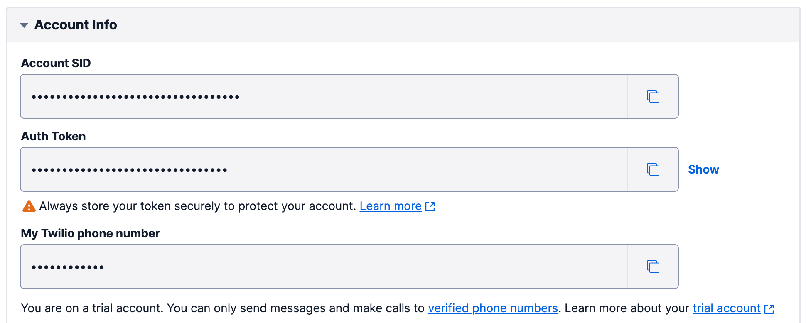
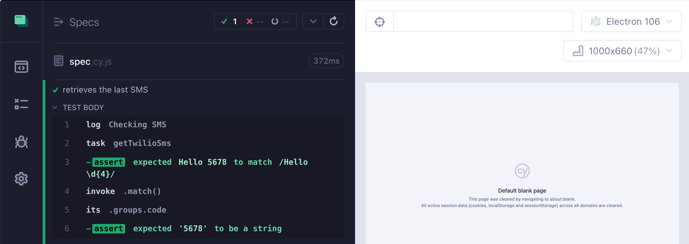
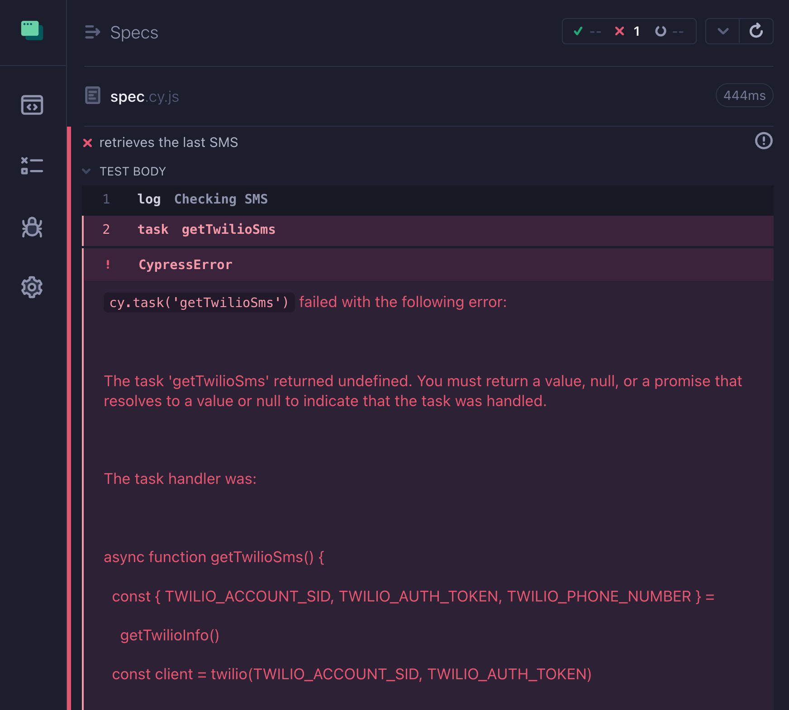
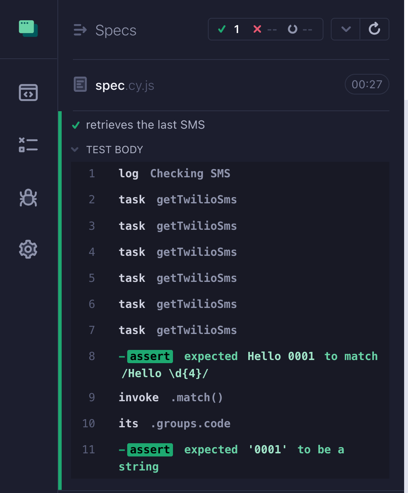
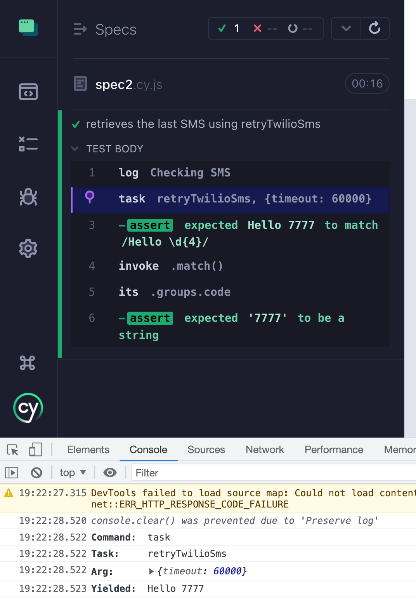

Retry checking Twilio SMS inbox to receive SMS messages in your Cypress tests.
I have signed up for Twilio SMS service. Now I have a valid phone number to use during my end-to-end tests. To check the messages using API, Twilio settings page shows the account ID, the auth token, and the phone number (I set all field HTML types to "password" to hide them in this screenshot)

I will put these settings in my .as-a.ini file that I never check into the source code.
Let's access the Twilio SMS messages from the Cypress test. We will need to use HTTP API to check the messages, this code runs in Node in your Cypress project. For example, we can begin writing a task code:
exportfunctiongetTwilioInfo() { // load up twilio info constTWILIO_ACCOUNT_SID = process.env.TWILIO_ACCOUNT_SID if (!TWILIO_ACCOUNT_SID) { thrownewError('TWILIO_ACCOUNT_SID is not defined') } constTWILIO_AUTH_TOKEN = process.env.TWILIO_AUTH_TOKEN if (!TWILIO_AUTH_TOKEN) { thrownewError('TWILIO_AUTH_TOKEN is not defined') }
constTWILIO_PHONE_NUMBER = process.env.TWILIO_PHONE_NUMBER if (!TWILIO_PHONE_NUMBER) { thrownewError('TWILIO_PHONE_NUMBER is not defined') } return { TWILIO_ACCOUNT_SID, TWILIO_AUTH_TOKEN, TWILIO_PHONE_NUMBER } }
exportasyncfunctiongetTwilioSms() { // TODO: call Twilio API and get the code }
Ok, great. Let's limit ourselves to the last message
1 2 3 4 5 6 7 8 9 10 11
exportasyncfunctiongetTwilioSms() { const { TWILIO_ACCOUNT_SID, TWILIO_AUTH_TOKEN, TWILIO_PHONE_NUMBER } = getTwilioInfo() const client = twilio(TWILIO_ACCOUNT_SID, TWILIO_AUTH_TOKEN) const messages = await client.messages.list({ to: TWILIO_PHONE_NUMBER, limit: 10, }) // assume there is at least one message return messages[0]?.body }
We can call this function as a Cypress task from the browser test.
cypress/e2e/spec.cy.js
1 2 3 4 5 6 7 8 9 10
it('retrieves the last SMS', () => { cy.log('Checking SMS') cy.task('getTwilioSms') // confirm the SMS text follows the expected format .should('match', /Hello \d{4}/) // extract the code from the string .invoke('match', /Hello (?<code>\d{4})/) .its('groups.code') .should('be.a', 'string') })
Let's start Cypress
1
$ as-a . npx cypress open
The test runs and returns the last message and extracts the text code from it

Filter messages by time
We probably do not want to retrieve the last existing message. A test probably does some action that causes a message to be sent, and then needs to confirm it. Thus we want to limit our messages to return items received after a certain time. For example, we could retrieve messages received in the last minute. Using Luxon library to easily subtract a minute:
// retrieve one message sent in the last minute const now = DateTime.now() const prev = now.minus({ minutes: 1 }) const messages = await client.messages.list({ to: TWILIO_PHONE_NUMBER, limit: 1, dateSent: prev.toJSDate(), }) // assume there is at least one message return messages[0]?.body }
This is where the things break down. A message might take a while to get delivered. As written now, there will be no message and the function getTwilioSms will return undefined, causing Cypress to fail the test with an error.

We can retry checking the SMS inbox in two ways.
Retry the cy.task command
Let's update our getTwilioSms to NOT fail if there are no messages. We must return null to signal to Cypress that there is no value, but it is ok. Thus we can change our return statement:
1 2
// assume there is at least one message return messages[0]?.body || null
If we do not have a string message, we should wait a little and call Twilio again. We can do this using cypress-recurse plugin:
it('retrieves the last SMS', () => { cy.log('Checking SMS') // call the first function that calls cy.task // until the second predicate function returns true recurse(() => cy.task('getTwilioSms'), Cypress._.isString, { log: false, // no need to log every iteration timeout: 60_000, // retry for up to 1 minute delay: 5_000, // wait 5 seconds between the tries }) // recurse yields the result of the command // which in our case is the result from the task // confirm the SMS text follows the expected format .should('match', /Hello \d{4}/) // extract the code from the string .invoke('match', /Hello (?<code>\d{4})/) .its('groups.code') .should('be.a', 'string') })
Suppose we text Hello 0001 while the test is running, forcing it to call the task getTwilioSms a few times until it yields a string.

Retry calling Twilio API
Instead of retrying the () => cy.task('getTwilioSms') function until it yields a value that passes the predicate Cypress._.isString, we can retry the code in the task itself. The same plugin cypress-recurse has a plain JavaScript function retry you can use to run synchronous or asynchronous functions.
// retrieve one message sent in the last minute const now = DateTime.now() const prev = now.minus({ minutes: 1 }).toJSDate()
// the result we will return after retries let lastMessage
awaitretry( // the first argument is a function to retry // in our case it yields the list of messages () => client.messages.list({ to: TWILIO_PHONE_NUMBER, limit: 1, dateSent: prev, }), // the second function is the predicate // checking the value resolved by the first function (messages) => { if (!messages.length) { // retry again returnfalse } // success! lastMessage = messages[0].body returntrue }, // retrying options { limit: 20, // retry 20 times delay: 5_000, // with 5 second pauses between attempts log: true, // log basic info about each attempt }, )
return lastMessage }
The retry(fn, predicate, options) function follows similar syntax to the recurse function, but is implemented using plain JavaScript, and thus can work in Node or browser without using Cypress commands. We can test this function directly by running it from Node. While it is retrying, we can send SMS message Hello 0909 and the retries stop.
1 2 3 4 5 6 7
$ as-a . node ./cypress/twilio/check-sms-cli.mjs attempt 1 of 20 was 🚨 attempt 2 of 20 was 🚨 attempt 3 of 20 was 🚨 attempt 4 of 20 was 🚨 attempt 5 of 20 was ✅ Hello 0909
exportdefaultdefineConfig({ e2e: { // baseUrl, etc supportFile: false, fixturesFolder: false, setupNodeEvents(on, config) { // make sure we have Twilio account values getTwilioInfo()
on('task', { getTwilioSms, // no retries retryTwilioSms, // with retries }) }, }, })
The spec can simply assume the task succeeds, but it needs to set the desired maximum task timeout.
cypress/e2e/spec2.cy.js
1 2 3 4 5 6 7 8 9 10 11 12 13 14
it('retrieves the last SMS using retryTwilioSms', () => { cy.log('Checking SMS') cy.task('retryTwilioSms', { timeout: 60_000, // let the task run up to 1 minute }) // recurse yields the result of the command // which in our case is the result from the task // confirm the SMS text follows the expected format .should('match', /Hello \d{4}/) // extract the code from the string .invoke('match', /Hello (?<code>\d{4})/) .its('groups.code') .should('be.a', 'string') })

We can see the retries again in the terminal output, not in the Cypress Console Log
1 2 3 4
attempt 1 of 20 was 🚨 attempt 2 of 20 was 🚨 attempt 3 of 20 was 🚨 attempt 4 of 20 was ✅
So if you need generic code retries in Node for your End-to-End tests, check out the retry function from cypress-recurse plugin.
🎓 The cypress-recurse plugin is explained in several lessons in my Cypress Plugins course.
Bonus: extract function
Using a local variable to save the value from the predicate function is cumbersome. We can use a separate extract function to take the result yielded by the successful function (the result that passed the predicate) and extract the value to return. Let's rewrite the task
// retrieve one message sent in the last minute const now = DateTime.now() const prev = now.minus({ minutes: 1 }).toJSDate()
const lastMessage = awaitretry( // the first argument is a function to retry // in our case it yields the list of messages () => client.messages.list({ to: TWILIO_PHONE_NUMBER, limit: 1, dateSent: prev, }), // the second function is the predicate // checking the value resolved by the first function (messages) => messages.length > 0, // retrying options { limit: 20, // retry 20 times delay: 5_000, // with 5 second pauses between attempts log: true, // log basic info about each attempt extract(messages) { // success, let's extract the value from // the result of the last function call return messages[0].body }, }, )